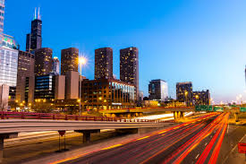
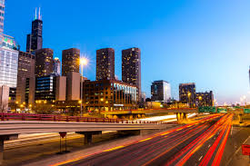

Festejar a educação no Paraná é uma tradição do Programa Agrinho, principal iniciativa de responsabilidade social do Sistema FAEP.
Ao longo dos 30 anos de história que serão completos em 2025, o Agrinho já premiou milhares de estudantes e professores que se destacaram na missão de fazer o conhecimento extrapolar os limites das salas de aula.
Neste ano, o tema do concurso é “Festejando a conexão campo-cidade”, que aponta para a necessidade de entender as relações de interdependência entre esses dois mundos.
O Programa Agrinho
Agrinho é o maior programa de responsabilidade social do Sistema FAEP, resultado da parceria entre o SENAR-PR, FAEP, o governo do Estado do Paraná, mediante as Secretarias de Estado da Educação e do Esporte, da Agricultura e do Abastecimento, da Justiça, Família e Trabalho e do Desenvolvimento Sustentável e do Turismo, bem como com a colaboração das Prefeituras municipais e diversas empresas e instituições públicas e privadas.
O Programa completa 26 anos de trabalhos no Paraná. Concebido em 1995, foi à campo em 1996, levando às escolas da rede pública de ensino uma proposta pedagógica baseada em visão complexa, na inter e transdisciplinaridade e na pedagogia da pesquisa. Anualmente, o programa envolve a participação de aproximadamente 800 mil crianças e mais de 50 mil professores da educação infantil, do ensino fundamental e da educação especial, estando presente em todos os municípios do Estado.
Criado com o objetivo de levar informações sobre saúde e segurança pessoal e ambiental, principalmente às crianças do meio rural, o Programa se consolida como instrumento eficiente na operacionalização de temáticas de relevância social da contemporaneidade dentro dos currículos escolares. Especialistas altamente qualificados, de renome nacional e internacional, de diversos grupos de pesquisa que trabalham em rede, fundamentam as informações que compõem o material didático preparado com exclusividade para o Programa. Pelo incentivo à pesquisa, defende-se uma educação crítica, criativa, que desenvolva a autonomia e a capacidade de professores e alunos assumirem-se como pesquisadores e produtores de novos conhecimentos. Desde seu início em 1996, os professores e alunos recebem com entusiasmo e dedicação as atividades do Programa Agrinho, a cada ano, esse trabalho vem se superando em qualidade e criatividade.
 
